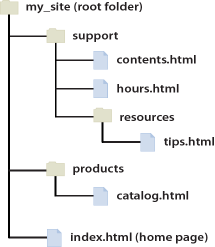

/ = Root directory
. = This location
.. = Up a directory
./ = Current directory
../ = Parent of current directory
../../ = Two directories backwardsUse normal slashes / not reversed slashes \ in the file paths
| Link From | To | Path |
| Contents.html | hour.html (Both on same folder) | hour.html |
| Contents.html | tips.html (in the resources subfolder) | resources/tips.html |
| Contents.html | index.html (in the parent folder, one level above contents.html) | ../index.html. |
| Contents.html | catalog.html (in a different subfolder of the parent folder) | ../products/catalog.html |